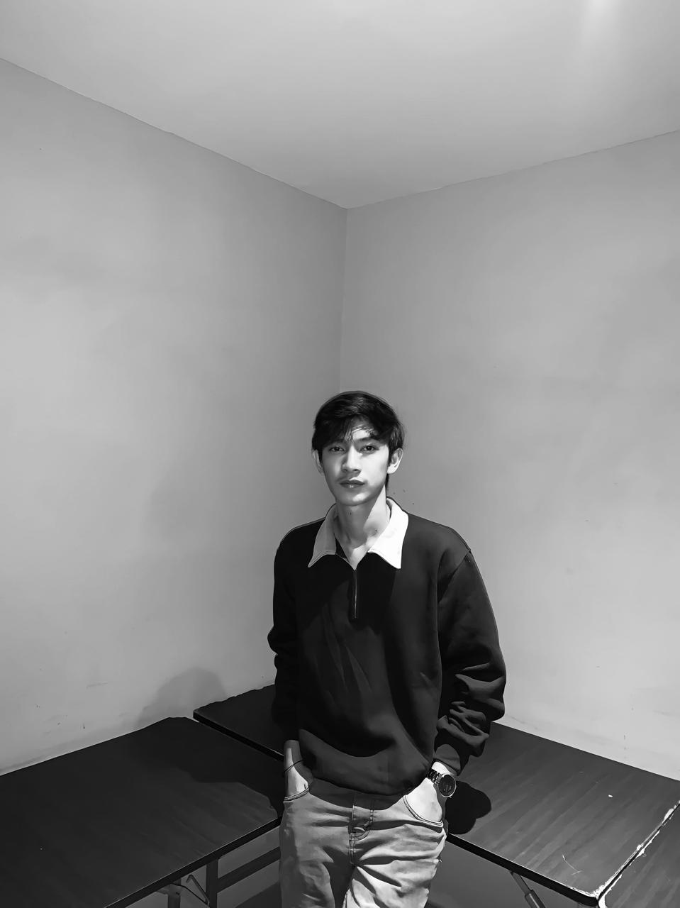

Ultaza Syah
Developer
About Me
Nama: Ultaza Syah
Alamat: Nagan Raya
Jurusan: Information Technology
TTL: Latong, 07 September 2003
Saya adalah mahasiswa di bidang Teknologi Informasi yang memiliki passion dalam dunia digital, terutama dalam analisis dan teknologi forensik. Saya memiliki pengalaman dalam berbagai proyek teknologi, serta keterampilan dalam pemrograman, analisis data, dan keamanan siber.
Development
Membangun solusi kustom berdasarkan spesifikasi teknis Anda.
SEO Optimization
Meningkatkan visibilitas situs web, melakukan perbaikan teknis, dan menulis konten SEO-friendly.
Database
Instalasi sertifikat SSL dan konfigurasi ulang untuk pengamanan website.
Data Security
Menyediakan solusi untuk melindungi data krusial Anda.